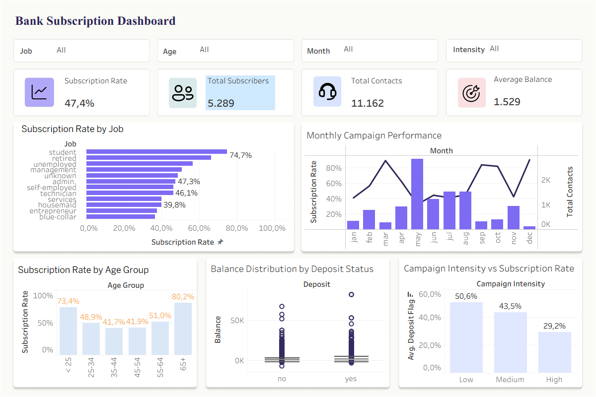

PROJECT 02 / BUSINESS INTELLIGENCE
Tableau Dashboard Collection
Transforming business data into interactive dashboards to explore performance, identify patterns, and support data-driven decision-making.
01 / OVERVIEW
Turning data into business insights.
This collection showcases interactive Tableau dashboards designed to analyze business performance and customer behavior. Each dashboard uses visual analytics to communicate key metrics, identify trends, and uncover actionable insights.
02 / SALES ANALYTICS
UrbanCart Sales & Profit Analysis
An interactive sales analytics project examining revenue, profitability, discount patterns, and product performance across 9,994 records.
Sales Revenue
Overall Profit
Profitability
The analysis identified differences in category profitability and highlighted the impact of discounts on sales performance.
03 / CUSTOMER ANALYTICS
Bank Deposit Subscription Analysis
A customer analytics dashboard exploring how demographics, account balances, and marketing campaign factors relate to term deposit subscriptions.

DASHBOARD WALKTHROUGH
Explore the Dashboard in Action.
A short demonstration of the dashboard's interactive filters, KPIs, and customer analytics visualizations.
Customer Records
Successful Subscriptions
Conversion Rate
The dashboard examines customer age, occupation, account balance, and campaign frequency to explore patterns in subscription behavior.
KEY INSIGHTS
Understanding customer behavior.
- The overall subscription rate reached 47.4%, with 5,289 subscribers out of 11,162 customers.
- Students recorded a 74.7% subscription rate, while customers aged 65+ reached 80.2%.
- Low campaign intensity showed a 50.6% subscription rate, compared with 29.2% for high intensity.
04 / KEY LEARNINGS
From visualization to decision-making.
These projects strengthened my ability to design interactive dashboards, develop meaningful KPIs, and translate complex datasets into clear visual insights for business decision-making.